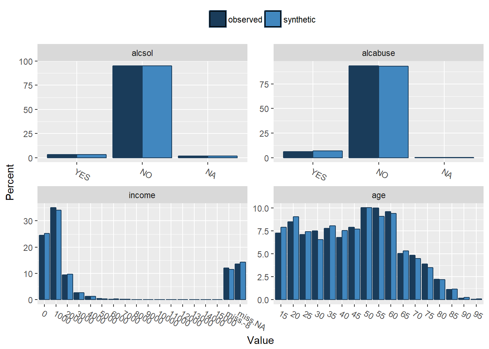

Last updated: 2018-06-20
workflowr checks: (Click a bullet for more information) ✔ R Markdown file: up-to-date
Great! Since the R Markdown file has been committed to the Git repository, you know the exact version of the code that produced these results.
✔ Environment: empty
Great job! The global environment was empty. Objects defined in the global environment can affect the analysis in your R Markdown file in unknown ways. For reproduciblity it’s best to always run the code in an empty environment.
✔ Seed:
set.seed(20180615)
The command set.seed(20180615) was run prior to running the code in the R Markdown file. Setting a seed ensures that any results that rely on randomness, e.g. subsampling or permutations, are reproducible.
✔ Session information: recorded
Great job! Recording the operating system, R version, and package versions is critical for reproducibility.
✔ Repository version: 54cd9eb
wflow_publish or wflow_git_commit). workflowr only checks the R Markdown file, but you know if there are other scripts or data files that it depends on. Below is the status of the Git repository when the results were generated:
Ignored files:
Ignored: .Rhistory
Ignored: .Rproj.user/
| File | Version | Author | Date | Message |
|---|---|---|---|---|
| Rmd | 54cd9eb | davidhen | 2018-06-20 | first synth |
| html | 82f3dfc | davidhen | 2018-06-20 | Build site. |
| Rmd | f40210b | davidhen | 2018-06-20 | page the table |
| html | 24f25dc | davidhen | 2018-06-20 | Build site. |
| Rmd | e99e582 | davidhen | 2018-06-20 | play |
| html | fd368ce | davidhen | 2018-06-20 | Build site. |
| Rmd | c1379d5 | davidhen | 2018-06-20 | update |
| html | 9695af3 | davidhen | 2018-06-20 | Build site. |
| Rmd | 1d9b5cd | davidhen | 2018-06-20 | add extrafont to se if fixes |
| html | b8e4e5c | davidhen | 2018-06-20 | Build site. |
| Rmd | f80dc2e | davidhen | 2018-06-20 | correct kable error |
| html | 56296f5 | davidhen | 2018-06-20 | Build site. |
| Rmd | ace3cfa | davidhen | 2018-06-20 | update with subset summary |
| html | e7a943c | davidhen | 2018-06-20 | Build site. |
| Rmd | 87762ee | davidhen | 2018-06-20 | change icon size |
| html | b8dec6a | davidhen | 2018-06-20 | Build site. |
| Rmd | 2fa03c7 | davidhen | 2018-06-20 | add icons for fun |
| html | 77a02c8 | davidhen | 2018-06-19 | Build site. |
| Rmd | 3252c67 | davidhen | 2018-06-19 | final commit before workshop |
| html | f50bf82 | davidhen | 2018-06-15 | Build site. |
| Rmd | 3fd6688 | davidhen | 2018-06-15 | commit with skim |
Load the package + others. I am using the dplyr package for data manipulation and the skimr package for summaries. If you don’t have these packages installed then you can install them by typing e.g. install.packages("dplyr")
library(synthpop) #Must be loaded before tidyverse or dplyr::select is maskedLoading required package: latticeLoading required package: MASSLoading required package: nnetLoading required package: ggplot2library(dplyr)
Attaching package: 'dplyr'The following object is masked from 'package:MASS':
selectThe following objects are masked from 'package:stats':
filter, lagThe following objects are masked from 'package:base':
intersect, setdiff, setequal, unionlibrary(magrittr)
library(skimr)
library(extrafont) # To Registering fonts with RThe synthpop package has a default dataset called SD2011 automatically loaded for examples. Here I produce a summary of the data using the skimr package.
skim(SD2011) %>% skimr::kable()Skim summary statistics
n obs: 5000
n variables: 35
Variable type: character
| variable | missing | complete | n | min | max | empty | n_unique |
|---|---|---|---|---|---|---|---|
| wkabdur | 0 | 5000 | 5000 | 1 | 2 | 0 | 33 |
Variable type: factor
| variable | missing | complete | n | n_unique | top_counts | ordered |
|---|---|---|---|---|---|---|
| agegr | 4 | 4996 | 5000 | 6 | 45-: 1361, 65+: 943, 35-: 748, 25-: 726 | FALSE |
| alcabuse | 7 | 4993 | 5000 | 2 | NO: 4679, YES: 314, NA: 7 | FALSE |
| alcsol | 82 | 4918 | 5000 | 2 | NO: 4756, YES: 162, NA: 82 | FALSE |
| edu | 7 | 4993 | 5000 | 4 | VOC: 1613, SEC: 1482, PRI: 962, POS: 936 | FALSE |
| eduspec | 20 | 4980 | 5000 | 27 | no : 1647, tec: 911, ser: 441, pro: 330 | FALSE |
| emcc | 4714 | 286 | 5000 | 17 | NA: 4714, GER: 132, GRE: 43, NET: 28 | FALSE |
| englang | 15 | 4985 | 5000 | 3 | NON: 3461, ACT: 787, PAS: 737, NA: 15 | FALSE |
| ls | 8 | 4992 | 5000 | 7 | PLE: 1947, MOS: 1692, MIX: 827, MOS: 274 | FALSE |
| marital | 9 | 4991 | 5000 | 6 | MAR: 2979, SIN: 1253, WID: 531, DIV: 199 | FALSE |
| placesize | 0 | 5000 | 5000 | 6 | RUR: 2389, URB: 843, URB: 642, URB: 407 | FALSE |
| region | 0 | 5000 | 5000 | 16 | Maz: 570, Sla: 500, Wie: 413, Mal: 371 | FALSE |
| sex | 0 | 5000 | 5000 | 2 | FEM: 2818, MAL: 2182, NA: 0 | FALSE |
| smoke | 10 | 4990 | 5000 | 2 | NO: 3713, YES: 1277, NA: 10 | FALSE |
| socprof | 33 | 4967 | 5000 | 9 | RET: 1241, EMP: 994, EMP: 600, PUP: 548 | FALSE |
| sport | 41 | 4959 | 5000 | 2 | YES: 3236, NO: 1723, NA: 41 | FALSE |
| trust | 37 | 4963 | 5000 | 3 | ONE: 3777, MOS: 678, IT`: 508, NA: 37 | FALSE |
| trustfam | 11 | 4989 | 5000 | 3 | YES: 4470, NO : 328, NO: 191, NA: 11 | FALSE |
| trustneigh | 11 | 4989 | 5000 | 3 | YES: 2959, NO : 1075, NO: 955, NA: 11 | FALSE |
| wkabint | 36 | 4964 | 5000 | 3 | NO: 4646, YES: 293, NA: 36, YES: 25 | FALSE |
| wkabintdur | 4697 | 303 | 5000 | 5 | NA: 4697, IT : 137, LES: 91, FOR: 29 | FALSE |
| workab | 438 | 4562 | 5000 | 2 | NO: 4432, NA: 438, YES: 130 | FALSE |
Variable type: numeric
| variable | missing | complete | n | mean | sd | p0 | p25 | p50 | p75 | p100 | hist |
|---|---|---|---|---|---|---|---|---|---|---|---|
| age | 0 | 5000 | 5000 | 47.68 | 18.51 | 16 | 32 | 49 | 61 | 97 | |
| bmi | 59 | 4941 | 5000 | 26.02 | 7.65 | 12.96 | 22.6 | 25.54 | 28.7 | 449.98 | |
| depress | 89 | 4911 | 5000 | 4.49 | 4.24 | 0 | 1 | 4 | 7 | 21 | |
| height | 35 | 4965 | 5000 | 168.7 | 9.22 | 116 | 162 | 168 | 175 | 202 | |
| income | 683 | 4317 | 5000 | 1411.09 | 1271.65 | -8 | 700 | 1200 | 1800 | 16000 | |
| mmarr | 1350 | 3650 | 5000 | 6.96 | 3.06 | 1 | 4 | 7 | 9 | 12 | |
| msepdiv | 4300 | 700 | 5000 | 6.54 | 3.3 | 1 | 4 | 6 | 9 | 12 | |
| nociga | 0 | 5000 | 5000 | -2.04 | 10.99 | -8 | -8 | -8 | 2 | 60 | |
| nofriend | 0 | 5000 | 5000 | 6.81 | 7.45 | -8 | 3 | 5 | 10 | 99 | |
| unempdur | 0 | 5000 | 5000 | 1.77 | 10.49 | -8 | -8 | 0 | 0 | 48 | |
| weight | 53 | 4947 | 5000 | 73.91 | 14.94 | 37 | 62 | 73 | 84 | 150 | |
| ymarr | 1320 | 3680 | 5000 | 1981.34 | 15.88 | 1937 | 1970 | 1981 | 1994 | 2011 | |
| ysepdiv | 4275 | 725 | 5000 | 1998.03 | 10.55 | 1944 | 1993 | 2000 | 2006 | 2011 |
This gives us a nice summary of the whole data frame.
For the purposes of the workshop we need to pick 4 variables from this that we will generate our first synthetic dataset from.
I’m going to go for alcsol, alcabuse, income and age
Just for fun…
The first task is to subset the dataframe using only these 4 variables. In the next chunk of code I declare an new object test1 and then used the dplyr verb select to choose the 4 variables I mentioned above. I use dplyr::glimpse() to show this subset data frame in a tranposed format for ease of printing.
test1 <-
SD2011 %>%
select(c(alcsol, alcabuse, income, age))
skim(test1)income is negative ?? should be NAincome is almost 16%alcsol and alcabuse are rare eventssyn1 <- syn(test1, cont.na = list(income = c(NA, -8)))syn variables
1 alcsol alcabuse income agecompare(syn1,test1)
Comparing percentages observed with synthetic
$alcsol
YES NO <NA>
observed 3.24 95.12 1.64
synthetic 3.18 95.30 1.52
$alcabuse
YES NO <NA>
observed 6.28 93.58 0.14
synthetic 6.76 93.16 0.08
$income
0 1000 2000 3000 4000 5000 6000 7000 8000 9000 10000 11000
observed 24.58 34.98 9.44 2.66 1.36 0.48 0.26 0.20 0.08 0.10 0.04 0.02
synthetic 25.20 34.12 9.72 2.66 1.28 0.34 0.30 0.24 0.08 0.12 0.02 0.04
12000 13000 14000 15000 miss.-8 miss.NA
observed 0 0 0.06 0.02 12.06 13.66
synthetic 0 0 0.06 0.00 11.54 14.28
$age
15 20 25 30 35 40 45 50 55 60 65 70
observed 7.28 8.52 7.10 7.52 7.80 6.82 7.9 10.04 10.02 9.60 5.04 4.84
synthetic 7.92 9.06 7.44 6.58 8.08 7.56 7.7 10.04 9.12 9.44 5.32 4.50
75 80 85 90 95
observed 3.92 2.24 1.14 0.16 0.06
synthetic 3.52 2.20 1.18 0.24 0.10
devtools::session_info()Session info ------------------------------------------------------------- setting value
version R version 3.5.0 (2018-04-23)
system x86_64, mingw32
ui RTerm
language (EN)
collate English_United Kingdom.1252
tz Europe/London
date 2018-06-20 Packages ----------------------------------------------------------------- package * version date source
anicon 0.1.0 2018-06-20 Github (emitanaka/anicon@f121b0e)
assertthat 0.2.0 2017-04-11 CRAN (R 3.5.0)
backports 1.1.2 2017-12-13 CRAN (R 3.5.0)
base * 3.5.0 2018-04-23 local
bindr 0.1.1 2018-03-13 CRAN (R 3.5.0)
bindrcpp * 0.2.2 2018-03-29 CRAN (R 3.5.0)
class 7.3-14 2015-08-30 CRAN (R 3.5.0)
classInt 0.2-3 2018-04-16 CRAN (R 3.5.0)
codetools 0.2-15 2016-10-05 CRAN (R 3.5.0)
coin 1.2-2 2017-11-28 CRAN (R 3.5.0)
colorspace 1.3-2 2016-12-14 CRAN (R 3.5.0)
compiler 3.5.0 2018-04-23 local
datasets * 3.5.0 2018-04-23 local
devtools 1.13.5 2018-02-18 CRAN (R 3.5.0)
digest 0.6.15 2018-01-28 CRAN (R 3.5.0)
dplyr * 0.7.5 2018-05-19 CRAN (R 3.5.0)
e1071 1.6-8 2017-02-02 CRAN (R 3.5.0)
evaluate 0.10.1 2017-06-24 CRAN (R 3.5.0)
extrafont * 0.17 2014-12-08 CRAN (R 3.5.0)
extrafontdb 1.0 2012-06-11 CRAN (R 3.5.0)
foreign 0.8-70 2017-11-28 CRAN (R 3.5.0)
ggplot2 * 2.2.1 2016-12-30 CRAN (R 3.5.0)
git2r 0.21.0 2018-01-04 CRAN (R 3.5.0)
glue 1.2.0 2017-10-29 CRAN (R 3.5.0)
graphics * 3.5.0 2018-04-23 local
grDevices * 3.5.0 2018-04-23 local
grid 3.5.0 2018-04-23 local
gtable 0.2.0 2016-02-26 CRAN (R 3.5.0)
highr 0.7 2018-06-09 CRAN (R 3.5.0)
htmltools 0.3.6 2017-04-28 CRAN (R 3.5.0)
icon 0.1.0 2018-06-20 Github (ropenscilabs/icon@8458546)
jsonlite 1.5 2017-06-01 CRAN (R 3.5.0)
knitr 1.20 2018-02-20 CRAN (R 3.5.0)
labeling 0.3 2014-08-23 CRAN (R 3.5.0)
lattice * 0.20-35 2017-03-25 CRAN (R 3.5.0)
lazyeval 0.2.1 2017-10-29 CRAN (R 3.5.0)
magrittr * 1.5 2014-11-22 CRAN (R 3.5.0)
MASS * 7.3-49 2018-02-23 CRAN (R 3.5.0)
Matrix 1.2-14 2018-04-13 CRAN (R 3.5.0)
memoise 1.1.0 2017-04-21 CRAN (R 3.5.0)
methods * 3.5.0 2018-04-23 local
modeltools 0.2-21 2013-09-02 CRAN (R 3.5.0)
multcomp 1.4-8 2017-11-08 CRAN (R 3.5.0)
munsell 0.5.0 2018-06-12 CRAN (R 3.5.0)
mvtnorm 1.0-8 2018-05-31 CRAN (R 3.5.0)
nnet * 7.3-12 2016-02-02 CRAN (R 3.5.0)
party 1.3-0 2018-04-20 CRAN (R 3.5.0)
pillar 1.2.3 2018-05-25 CRAN (R 3.5.0)
pkgconfig 2.0.1 2017-03-21 CRAN (R 3.5.0)
plyr 1.8.4 2016-06-08 CRAN (R 3.5.0)
polspline 1.1.13 2018-06-14 CRAN (R 3.5.0)
proto 1.0.0 2016-10-29 CRAN (R 3.5.0)
purrr 0.2.5 2018-05-29 CRAN (R 3.5.0)
R.methodsS3 1.7.1 2016-02-16 CRAN (R 3.5.0)
R.oo 1.22.0 2018-04-22 CRAN (R 3.5.0)
R.utils 2.6.0 2017-11-05 CRAN (R 3.5.0)
R6 2.2.2 2017-06-17 CRAN (R 3.5.0)
randomForest 4.6-14 2018-03-25 CRAN (R 3.5.0)
Rcpp 0.12.17 2018-05-18 CRAN (R 3.5.0)
rlang 0.2.1 2018-05-30 CRAN (R 3.5.0)
rmarkdown 1.10 2018-06-11 CRAN (R 3.5.0)
rpart 4.1-13 2018-02-23 CRAN (R 3.5.0)
rprojroot 1.3-2 2018-01-03 CRAN (R 3.5.0)
Rttf2pt1 1.3.6 2018-02-22 CRAN (R 3.5.0)
sandwich 2.4-0 2017-07-26 CRAN (R 3.5.0)
scales 0.5.0 2017-08-24 CRAN (R 3.5.0)
skimr * 1.0.3 2018-06-07 CRAN (R 3.5.0)
spData 0.2.9.0 2018-06-17 CRAN (R 3.5.0)
splines 3.5.0 2018-04-23 local
stats * 3.5.0 2018-04-23 local
stats4 3.5.0 2018-04-23 local
stringi 1.1.7 2018-03-12 CRAN (R 3.5.0)
stringr 1.3.1 2018-05-10 CRAN (R 3.5.0)
strucchange 1.5-1 2015-06-06 CRAN (R 3.5.0)
survival 2.41-3 2017-04-04 CRAN (R 3.5.0)
synthpop * 1.4-3 2018-03-19 CRAN (R 3.5.0)
TH.data 1.0-8 2017-01-23 CRAN (R 3.5.0)
tibble 1.4.2 2018-01-22 CRAN (R 3.5.0)
tidyr 0.8.1 2018-05-18 CRAN (R 3.5.0)
tidyselect 0.2.4 2018-02-26 CRAN (R 3.5.0)
tools 3.5.0 2018-04-23 local
utils * 3.5.0 2018-04-23 local
whisker 0.3-2 2013-04-28 CRAN (R 3.5.0)
withr 2.1.2 2018-03-15 CRAN (R 3.5.0)
workflowr 1.0.1 2018-04-23 CRAN (R 3.5.0)
yaml 2.1.19 2018-05-01 CRAN (R 3.5.0)
zoo 1.8-2 2018-06-11 CRAN (R 3.5.0) This reproducible R Markdown analysis was created with workflowr 1.0.1